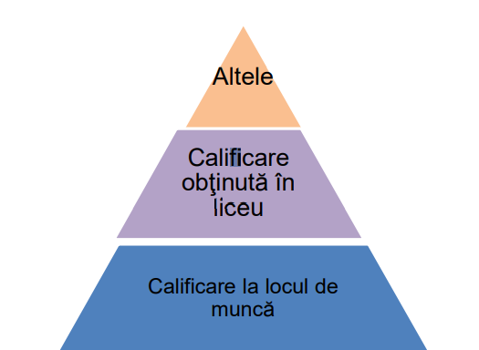

Porniţi aplicaţia pentru prezentări şi deschideţi o nouă prezentare.
Inseraţi în prezentare şapte noi diapozitive
Prima folie va fi de tip titlu şi va conţine titlul „Oferta locurilor de muncă” şi subtitlul „pentru absolvenţii de liceu”.
A doua folie conţine textul – „Calendarul acţiunilor de promovare” (scris cu font Papyrus, culoare
albastră, dimensiune 50) şi tabelul de mai jos:
Nr. crt
Locaţia
Data şi ora
1.
Sediul Primăriei
15.01.2010, ora 16
2.
Universitate – Sala de Sport
22.01.2010, ora 16
3.
Sediul OPC
01.02.2010, ora 12
Folia trei va conţine o imagine potrivită cu titlul din folia 1, imagine ce cuprinde întreaga folie
În folia patru inseraţi o nomogramă piramidală, aşa cum este prezentată alăturat

În folia cinci inseraţi două butoane de acţiune. Primul face trecerea în folia 2 iar cel de-al doilea către folia şapte. Scrieţi în folia şapte textul „Succes!”.
Folia şase conţine textul: „Oferte valabile după data de 01.03.2023”. Adăugaţi cuvântului „Oferte”
un Hyperlink către un document din Documents.
Inseraţi, în secţiunea de subsol, automat data şi ora precum şi numărul de diapozitiv.
Adăugaţi întregii prezentări ca design template un şablon ales de Dvs. şi aplicaţi un efect de tranziţie întregii prezentări.